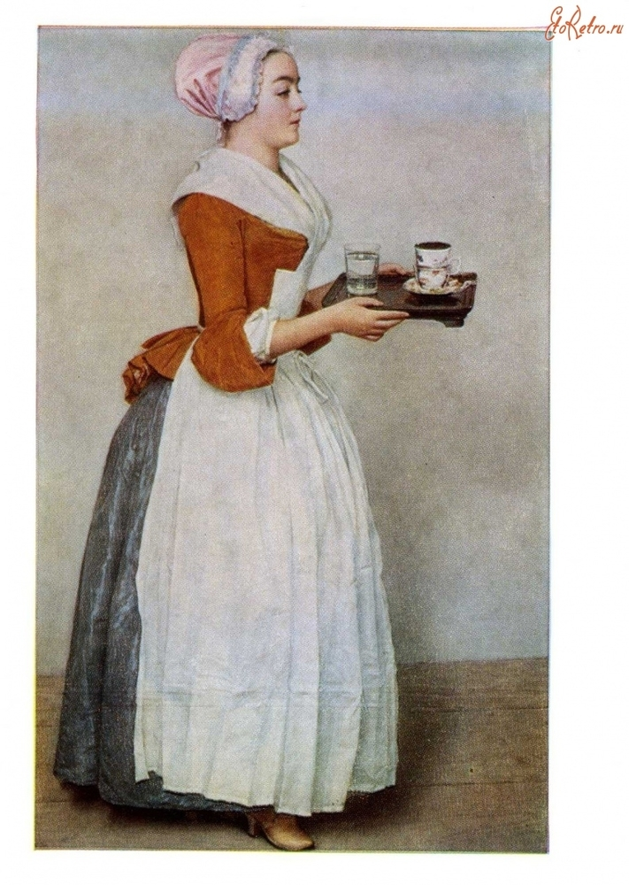

Картинная галерея портретов
 Мона Лиза
Мона Лиза

“Шоколадница”
Этот очаровательный образ служанки, которая держит в руках поднос с чашкой шоколада, поражает искренним и непосредственным подходом к изображению незатейливого сюжета. Холодноватая чистота колорита и плавный абрис фигуры подчеркивают эффект, образуемый ярким платьем девушки на гладком фоне. Легкость и жизнерадостность картины сближают Лиотара с художниками французского рококо, но в нем нет и следа их искусственности. Вместе с тем, его живопись предвосхищает работы Жана Огюста Доминика Энгра и Эдуарда Мане. Лиотар несколько лет провел в Константинополе, где на него, вероятно, оказала влияние традиция турецкой миниатюры. Некоторые ее особенности - ровное освещение, чистота красок и чуть церемонное выражение лица служанки - можно заметить в картине. По возвращении в Европу Лиотар продолжал носить турецкий костюм и бороду, используя выгоды, какие ему доставляла его экстравагантность. В Англии его портреты имели успех, хотя Уолпол и говорил, что они "чрезмерно склонны к лести". Шарлей, Фрагонар, Грёз, Энгр, Мане, Ватто.
 “Портрет старика”
“Портрет старика”